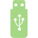

Web Interface
User Interface Layout
{kind=link}
카메라 이미지
빠른 제어 아이콘 바
상태 아이콘
ARZoom 이미지
빠른 메뉴
검색
검색 결과
Status Icons
 정상 전원
정상 전원
 불안정한 전원
불안정한 전원
 하늘 인식됨
하늘 인식됨
 하늘 인식 실패
하늘 인식 실패
{kind=link}
{kind=link}
{kind=link}
 GPS 입력 필요
GPS 입력 필요
{kind=link}
{kind=link}
{kind=link}
 USB 인식됨
{kind=link}
Quick control icons
 화면 잠금/해제
화면 잠금/해제
 확대
확대
 축소
축소
 이미지 회전
이미지 회전
 고급 설정 메뉴 열기/닫기
고급 설정 메뉴 열기/닫기
 실시간 하늘 인식 켬/끔
실시간 하늘 인식 켬/끔
{kind=link}
 별 검색
별 검색
 별 목록 열기/닫기
별 목록 열기/닫기
{kind=link}
 증강 현실 모드 켬/끔
증강 현실 모드 켬/끔
{kind=link}
 DSO 표시 켬/끔
DSO 표시 켬/끔
 가장 가까운 DSO 자동 표시 켬/끔
가장 가까운 DSO 자동 표시 켬/끔
{kind=link}
 타임랩스 시작/종료
타임랩스 시작/종료
{kind=link}
{kind=link}
{kind=link}
 전체 화면 모드 (안드로이드 및 데스크탑 전용)
전체 화면 모드 (안드로이드 및 데스크탑 전용)
{kind=link}
 이미지 다운로드
이미지 다운로드
{kind=link}
{kind=link}
{kind=link}
Timelapse Menu
타임랩스 이미지 저장 기능을 위한 다양한 형식을 선택할 수 있습니다. 타임랩스 아이콘 을 누르면 시스템은 위에서 선택한 형식으로 이미지를 기록하기 시작합니다.
Tiff 및 png 형식은 RAW 이미지를 저장하며 “주석 저장”은 주 망원경 방향 등 추가 정보를 포함하여 이미지를 저장합니다.
{kind=link}
{kind=link}
Collimation Menu

Camera: 현재 내부 카메라만 지원됩니다.
Focus: 외부 오토포커스 카메라의 초점 조절
X Offset: 원을 X축으로 이동
Y Offset: 원을 Y축으로 이동
Setting Up License
Astroid의 기본 시스템과 앱은 HW 라이선스 키로 보호됩니다. 따라서 복구 이미지로 기기를 복구할 경우 라이선스도 복구해야 합니다. 이를 위해 웹 인터페이스에 라이선스 파일을 업로드해야 합니다. 라이선스 파일은 시스템 설정 메뉴에서 “Get License File” 버튼을 클릭하여 다운로드할 수 있습니다. 기기를 받은 후 한번 라이선스 파일을 다운로드하여 컴퓨터에 저장해 두는 것이 좋습니다.
라이선스 파일을 업로드하려면 시스템 설정 메뉴로 가서 License Code File 버튼을 클릭한 후 컴퓨터에 저장된 라이선스 파일을 선택하십시오.
라이선스 파일에 접근할 수 없는 경우, 시스템 ID와 일련 번호를 보내주십시오. 저희 직원이 가능한 한 빨리 라이선스 파일을 보내드리겠습니다.
또한, Raspberry Pi 4를 교체하는 경우 원래의 라이선스 코드가 작동하지 않습니다. Raspberry Pi 관련 문제가 있는 경우 직접 Raspberry Pi를 교체하기보다 저희에게 연락하십시오.
Hot Pixel Correction
핫 픽셀 수는 시간이 지남에 따라 자연스럽게 증가합니다. 특히 EAA 스태커를 트래킹 옵션과 함께 실행할 경우 이 핫 픽셀이 두드러집니다. Astroid에는 내장된 핫 픽셀 감지 및 보정 기능이 있습니다. 하지만 핫 픽셀을 보정하려면 수동으로 핫 픽셀 감지기를 활성화해야 합니다. 다음 절차를 따라 핫 픽셀을 감지하고 보정하십시오.
제공된 센서 뚜껑을 사용하여 센서를 완전히 차단합니다. 주변의 모든 불을 끄고 방을 완전히 어둡게 만듭니다.
카메라 설정으로 가서 노출을 1초로, 게인을 150으로 설정합니다.
시스템 메뉴로 가서 핫 픽셀 레벨을 조정합니다. 값이 낮을수록 더 많은 핫 픽셀이 감지됩니다.
핫 픽셀 보정 버튼을 클릭합니다.
EAA 스태커를 실행하여 핫 픽셀이 사라졌는지 확인합니다.
기본 값으로 시도한 후에도 약한 핫 픽셀이 남아있다면 값을 낮추고 위 과정을 만족할 때까지 반복합니다.
Writing Images to USB Memory
DDS USB를 준비합니다. DDS USB 만드는 방법은 다음 섹션을 참조하십시오.
타임랩스 버튼을 클릭하여 녹화를 시작합니다.
Warning
고속 USB 메모리만 사용하십시오. 저속 USB를 사용할 경우 녹화가 끝난 후에도 Astroid가 계속해서 파일을 USB에 기록하여 파일 손상 가능성이 급증합니다.
How to eject
USB 아이콘이 모두 사라지고 eject 버튼을 클릭한 후에만 USB를 꺼내십시오. 그렇지 않으면 USB가 손상되어 모든 데이터가 손실됩니다.
Making DDS USB
SanDisk 32GB Ultra Fit 또는 동급 제품을 준비합니다. 데이터 손실을 방지하려면 고속 USB 메모리를 강력히 권장합니다.
디스크를 NTFS 형식으로 포맷하고 이름을 DDS로 변경합니다.
USB를 Astroid에 삽입하고 상단에 USB 아이콘이 나타나는지 확인합니다.